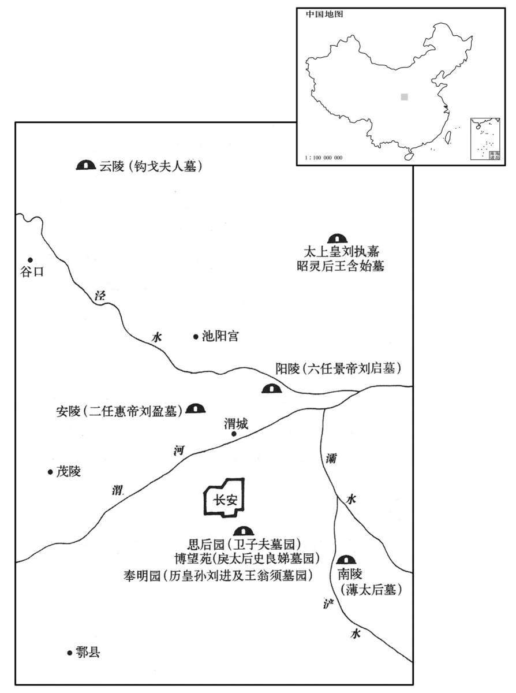

公元前40年资治通鉴：本年记事、原文与白话对照
按原书编年位置阅读；追叙和史论不等于本年发生的事件。白话采用所据译本，缺译不以生成译文补齐。
卷29 · 本年记事
公元前40年 · 汉孝元皇帝永光四年
四年〔（辛巳、前四○）〕

本年形势与背景参考图
春，二月，赦天下。
春季，二月，大赦天下。
三月，上行幸雍，祠五畤。〔雍，于用翻。畤，音止。〕
三月，元帝前往雍城，祭祀五帝。
夏，六月，甲戌，孝宣园东阙灾。
夏季，六月甲戌（二十六日），孝宣皇帝陵园东门失火。
戊寅晦，日有食之。上于是召诸前言日变在周堪、张猛者责问，皆稽首谢；〔谮堪、猛事见上卷元年。稽，音启。〕因下诏称堪、猛〔【章：乙十一行本无「猛」字；传校同。】〕之美，征诣行在所，拜为光禄大夫，秩中二千石，领尚书事；猛复为太中大夫、给事中。中书令石显管尚书，〔师古曰：言管主其事。〕尚书五人皆其党也；〔按帝纪及百官表，成帝建始四年，初置尚书员五人。此盖言显与牢梁、五鹿充宗、伊嘉、陈顺五人皆典领尚书事，虽未置定员，实亦五人也。〕堪希得见，〔见，贤遍翻。〕常因显白事，事决显口。会堪疾瘖，不能言而卒。〔师古曰：瘖，音于今翻。〕显诬谮猛，令自杀于公交车。
戊寅晦（三十日），出现日食。元帝召集那些先前说天变灾难都是为周堪、张猛而发的官员进行责问，他们都跪拜于地谢罪。于是，元帝下诏褒扬周堪、张猛，调回京师长安。任命周堪担任光禄大夫，支中二千石俸禄，主管尚书事务；任命张猛当太中大夫、给事中。而这时候，中书令石显兼管尚书，尚书五人都是石显的党羽。周堪很难见到元帝，虽有建议，往往不得不拜托石显代为转达，大政方针的决定权被石显控制。正巧周堪得了失音病，不能说话而去世。石显又诬陷张猛，让他自杀于公车官署。
初，贡禹奏言：「孝惠、孝景庙皆亲尽宜毁，〔按贡禹传，定汉宗庙迭毁之礼，未及施行而卒。其后，韦玄成等毁庙之议，又不纯用禹说。观其奏言天子七庙，孝惠、孝景亲尽宜毁，盖以悼考庙足为七庙也。〕及郡国庙不应古礼，宜正定。」〔惠帝尊高帝庙为太祖庙，景帝尊文帝庙为太宗庙；行所尝幸郡国，各立太祖、太宗庙。宣帝复尊武帝为世宗庙，行所巡狩亦立焉。凡祖宗庙在郡国者六十八，合百六十七所。春秋之义，王不祭于下土诸侯，故以为不应古礼。〕天子是其议。秋，七月，戊子，罢昭灵后、武哀王、昭哀后、卫思后、戾太子、戾后园，皆不奉祠，裁置吏卒守焉。〔师古曰：昭灵后，高祖母也。武哀王，高祖兄也。昭哀后，高祖姊也。卫思后，戾太子母也。戾后，即史良娣也。〕冬，十月，乙丑，罢祖宗庙在郡国者。
当初，贡禹上奏章说：“孝惠帝、孝景帝的祭庙，因为亲情己尽，应该撤除。各郡、各封国设置皇帝祭庙，不合古代礼制规定，应该改正。”元帝认为有理。秋季，七月戊子（初十），撤除昭灵后、武哀王、昭哀后、卫思后、戾太子、戾后的祭庙，都不再祭祀，只设置官吏兵卒守护。冬季，十月乙丑（十九日），撤除设置在各郡、各封国的祖宗祭庙。
诸陵分属三辅。〔师古曰：先是诸陵总属太常，今各依其地界属三辅。〕以渭城寿陵亭部原上为初陵；〔服虔曰：元帝所置陵也；未有名，故曰初。〕诏勿置县邑及徙郡国民。
元帝下诏，各位皇帝的陵园，以其所在地区，分属三辅管理。在渭城寿陵亭部原上预设坟墓，下诏不要把它发展成为一个县，也不要强迫各郡、各崐封国移民到那里。